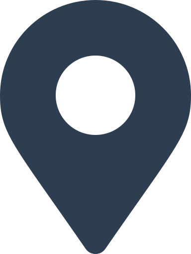
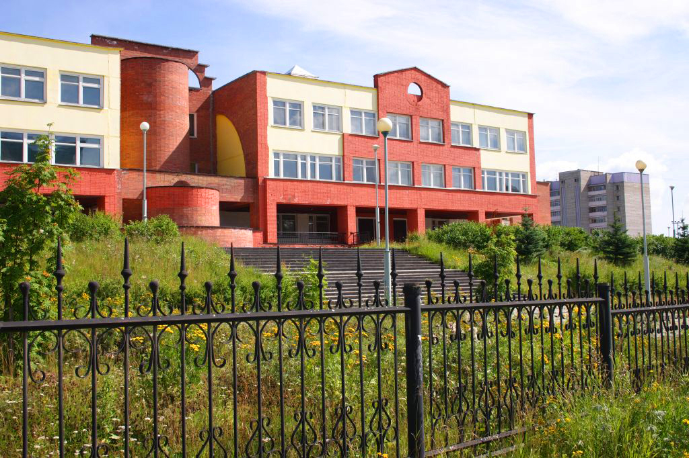

76 школа  Google Maps
1995 ГОД - ГОД РОЖДЕНИЯ ШКОЛЫ
В 1995 году в городе Лесном на улице Юбилейной появилась школа-новостройка – современное трехэтажное здание с куполом «зимнего сада» и башней обсерватории, спортивным стадионом, игровой площадкой и большим пришкольным участком. Для тысячи детей, щедрых и доверчивых, жизнерадостных и шаловливых, вдумчивых и любознательных, школа с тех пор стала вторым домом. Вместе с ними здесь живут творческие учителя и профессиональные художники, мастера спорта и педагоги дополнительного образования. Вместе мы постигаем секреты партнерского общения и основы здорового образа жизни, учимся грамотно взаимодействовать с окружающей средой и жить в согласии с собой и миром.
Со времени основания школы огромный «корабль» уверенно вела правильным курсом по бурным волнам школьной жизни директор Тетерина Людмила Ивановна,«Отличник народного просвещения», «Заслуженный учитель РФ». Вместе с ней члены управленческой команды — Л.А. Кадкина, Е.И. Шишкина, С.А. Воронкова, Н.Б. Чернышова, Н.Р. Бахтегузина.
За годы работы школа осуществила 13 выпусков. 17 выпускников получили золотую и 48 серебряную медали. Ежегодно около 70% поступают в различные вузы России Москвы, Санкт-Петербурга, Перми, Уфы, Казани, Екатеринбурга, Лесного.
Школа № 76 была открыта в 1995 году.
С 2000 года приоритетным направлением развития школы №76 стало ноосферное образование.
В 2003 - 2004 учебном году педколлектив прнял участие в конкурсе «Лучшие школы России». По итогам регионального этапа конкурса школа была признана лучшей в области. На федеральном, заключительном, этапе конкурса школа отмечена Почетным дипломом Министерства образования РФ среди сотни лучших школ России. В копилке достижений школы и победы учительского вокального и танцевального коллектива в областном конкурсе «Грани таланта», призовые места в областном экологическом марафоне «Марш парков» 2002 и 2010 годов.
С 2005 года в течение четырёх лет педколлектив работал в качестве базовой площадки ИРРО по теме «Создание единого информационно- образовательного пространства школы».
С 1 декабря 2006 года школу возглавила Л.М.Екимова.
В 2006 г. учитель начальных классов Е.С.Михайлова и в 2012 году Т.В. Лобанова стали обладателями гранта конкурса лучших учителей РФ в рамках реализации национального проекта «Образование».
В 2007 году школа стала победителем конкурсного отбора на Грант Президента РФ среди школ, реализующих инновационные образовательные программы.
С 2007 года школа № 76 является базовой площадкой ИРРО по теме «Индивидуальная образовательная траектория как условие саморазвития и самоопределения ученика».
За годы работы школа осуществила 13 выпусков. 17 выпускников получили золотую и 48 серебряную медали. Ежегодно около 70% поступают в различные вузы России Москвы, Санкт-Петербурга, Перми, Уфы, Казани, Екатеринбурга, Лесного.
В 2010 году школа стала призёром областной выставки «Инновации в системе образования».
В 2012 году школа награждена Золотой медалью «Элита Российского образования», за выдающиеся достиженья, высокий профессионализм и творческую инициативу».
В 2013 году – победитель международного проекта «Экологическая культура. Мир и согласие» в номинации «Экология здоровья».
В 2013 году школа стала лауреатом Всероссийского конкурса «100 лучших школ России»в номинации «Школа года 2013 – лидер в области внедрения инновационных технологий», школа награждена золотой медалью «Элита Российского образования» за выдающиеся достижения, высокий профессионализм и творческую инициативу,Лауреат конкурса «Директор года 2013» Всероссийского конкурса «100 лучших школ России», 2 место в областном конкурсе МО и ПО СО программ педагогов, работающих с детьми социально неблагополучных семей, по профилактике наркомании, алкоголизма и токсикомании.
В 2014 году школа удостоена Национальной премии в области образования «Элита Российского образования», Диплом 2 степени в номинации «Лучший цикл воспитательных мероприятий 2014 года»,школа стала победителем международного проекта «Экологическая культура. Мир и согласие» в номинации «Экология здоровья»
В 2015 году школа награждена Международной Академией развития образования и педагогических наук орденом А.С. Макаренко за выдающиеся заслуги. Вклад в развитие просвещения, образования и духовно-нравственного воспитания.